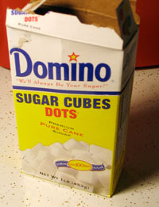

Sugar Cubes confirmed in Central Village

If you make your own coffee and you aren’t crazy, you probably use sugar cubes. Pouring loose sugar into coffee is dangerously unpredictable. What if you end up with too little white stuff, or worse, too much? Don’t panic: this problem was solved ages ago with the invention of sugar cubes. Easy, cheap, and smart. Hooray!
Unfortunately, the unenlightened masses don’t buy sugar cubes, making them pretty hard to find. You can often find sugar products that are not quite cubes and not quite white - they’re raw! - that cost five times as much per ounce as plain sugar. Hmm… no thanks!
But sometimes redemption comes from an unlikely, and just plain unappealing, source. The Gristedededede’s on University Place between 8th and 9th Streets usually has Domino Dots in stock, one pound for $1.50. Praise Cain.
Backtalk
Granulated sugar is truly unpredictable. Doctor B doesn’t know this, but last week when we were out of sugar cubes, he put about a cup of sugar in my mug! Sugar cubes save the day, every day.
This is a family crisis.
Add a comment